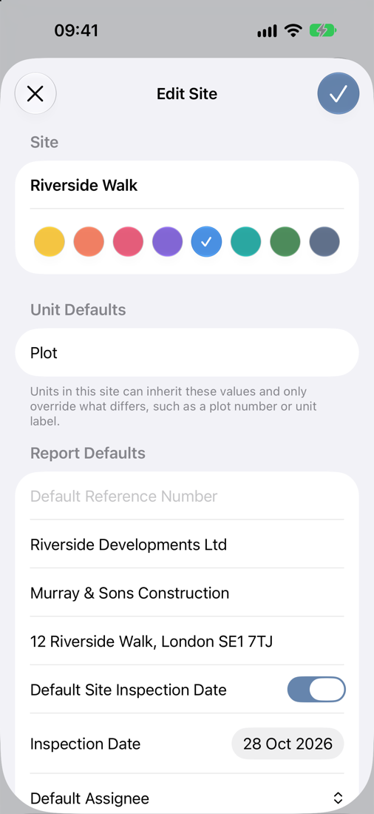
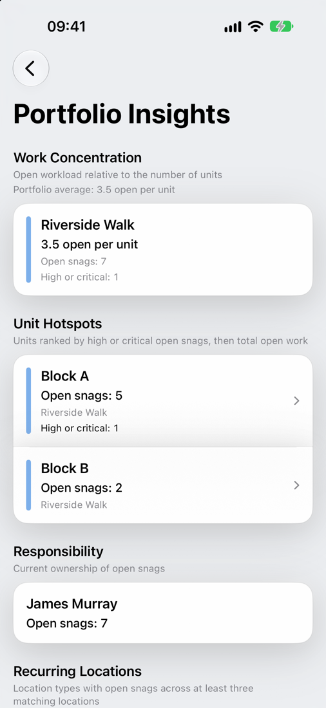
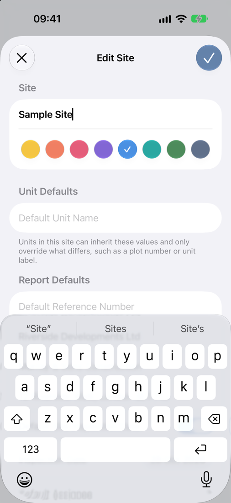

Sites, Units and Locations
Snaglite is built around a simple structure that keeps inspection data organised and easy to report: Site → Unit → Location → Snag.
The Sites screen and Inspection Hub
The Sites screen is the home of the app. At the top is the Inspection Hub, which shows:
- the number of active sites, open snags and closed snags. Tap the arrow beside them to open Portfolio Insights.
- Continue Inspection – goes straight back to the last unit you were working in.
- Missing Photos – lists snags that have no photos yet.
- Recent Snags – lists snags by most recent activity.
- Mapped Sites – a map with a pin for each site that has an address, plus a weather badge showing current conditions where you are.
Your sites are listed below the hub. Each row shows the number of units and how many snags are closed.
Use ⋯ to sort sites (name or date), show or hide archived sites, and open Settings.

Sites
A site is the top-level record. It usually represents the overall development, scheme, property or job. Create a separate site for each project or inspection commission.
Tap + on the Sites screen to add a site. As well as the name, you can set:
- Site colour – shown on the site row and its map pin.
- Default Unit Name – for example “Plot”. New units start with this name, so you only need to type the number.
- Unit defaults – reference number, client, contractor, site address and inspection date. Units use these unless you override them.
- Default Assignee – applied to new snags created on this site.
To change these later, swipe left on the site and tap Edit Site, or press and hold the site row.

Units
A unit sits within a site. It is the plot, apartment, house, block or other division you are inspecting. On a housing development each plot might be a unit; on a larger building, a floor or flat might be.
Each unit has its own reference number, client, contractor, address and inspection date. Leave a field blank to use the site default. Turn on Use Site Inspection Date to keep the unit in step with the site.
The Units screen also holds:
- Site Notes – general notes for the whole site.
- Attachments (in ⋯) – documents that apply to every unit.
The ⋯ menu lets you sort units, select several at once, and export reports for the selected units in one go. Units are sorted in a natural order, so “Plot 9” comes before “Plot 10”.

Locations
A location is the specific room, area or space where a snag is found, such as Kitchen, Bedroom 1, Plant Room or External Works. Use names another person would understand without explanation.
Opening a unit shows:
- General Notes for the unit. Press and hold to choose whether they appear on the report.
- Attachments and Drawings for the unit. See Attachments and Drawings.
- All Snags – every snag in the unit in one list.
- Your locations, each with a progress bar showing how many snags are closed.
Swipe right on a location to mark all of its snags Open or Closed. Swipe left to Rename or Delete it. Locations can be sorted by name or snag count, or kept in your own manual order.

Copying locations between units
If several units share the same layout, set up the locations once and copy them:
- Press and hold the unit that already has the locations, and choose Copy Locations.
- Tap ⋯ → Select, select the units you want to fill, then choose ⋯ → Paste Locations.
Only location names are copied, not snags. Locations that already exist in a unit are skipped. A banner confirms how many were added.
Portfolio Insights
Portfolio Insights shows where the open work is across all your active sites. Open it from the arrow beside the counts on the Inspection Hub.
- Work Concentration – open snags per unit for each site, compared with your average.
- Unit Hotspots – units ranked by high or critical open snags, then by total open snags.
- Responsibility – how many open snags each assignee has.
- Recurring Locations – room types, such as bathrooms, where open snags keep appearing across at least three matching locations.
Tap a unit hotspot to go straight to it.

Archiving sites
When a job is finished, swipe left on the site and tap Archive Site. You can choose:
- Archive Only – moves the site into the archive. You can unarchive it at any time.
- Archive and Remove Full-Sized Photos – archives the site and permanently deletes the full-size photos to save storage. Small thumbnails, notes and snag details are kept.
Removing full-sized photos cannot be undone, and the site becomes read-only. You can still browse and export it, but not edit it. Export a PDF report first if you need a full visual record.
Use ⋯ → Show Archived on the Sites screen to show or hide archived sites.

Good practice
- Fill in the site defaults first, so every new unit starts with the right details
- Keep unit names consistent across the project
- Use location names that match how the building is described on site
- Set up the structure before adding a large number of snags